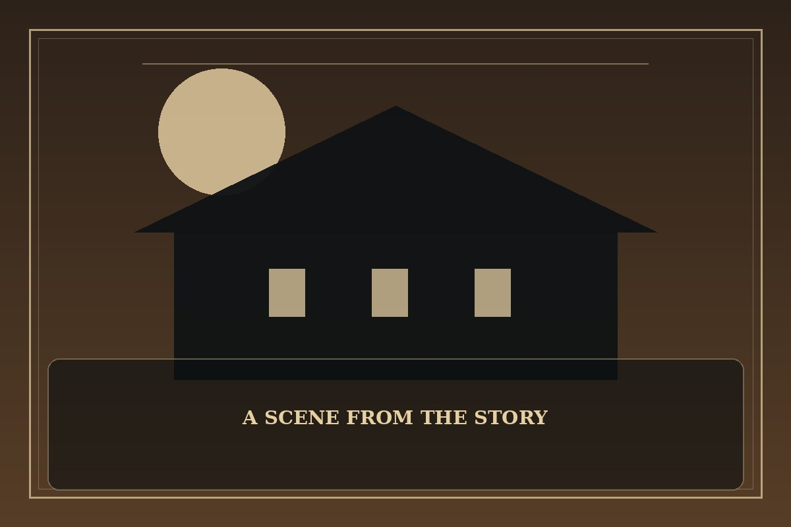

A Returner's Magic Should Be Special
Synopsis
A mage given another opportunity to prevent a looming disaster returns to a time when allies are still strangers. Preparation and trust may be as important as magical talent.
Chapter 1: The Class No One Wanted
The academy placed Desmond in the weakest class, a room with cracked windows and a chalkboard that refused to stay clean. He remembered a future in which the students here were overlooked until it was too late.
He began by asking each classmate to demonstrate a spell they believed was useless. One could sense tiny shifts in air pressure; another could remember every sound; a third could make a spark last longer than expected. Alone, their skills seemed trivial.
Together, they built a warning system that detected a breach before the senior mages noticed it. Desmond watched his classmates celebrate, realizing that a second chance was not a promise of easy victory. It was an invitation to see value where he had once seen weakness.

This fan-made sample is an original piece created for a student website project; it is not an official chapter of A Returner's Magic Should Be Special.